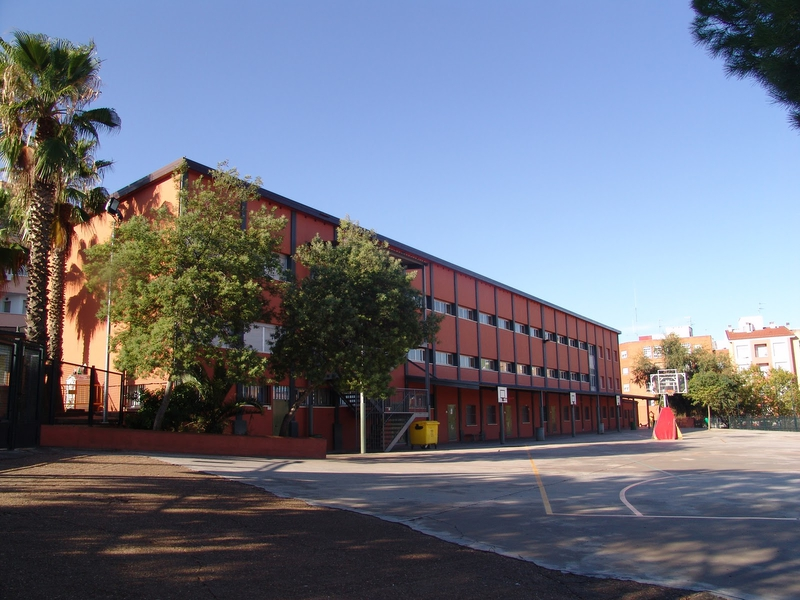
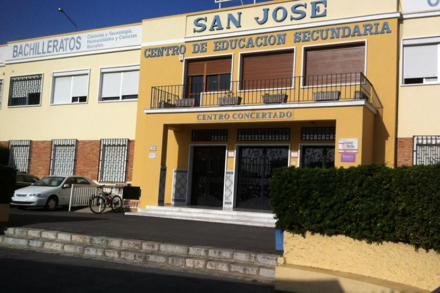

Conectando Horizontes: Una Colaboración Educativa
Un proyecto impulsado por la Escuela Virgen de Guadalupe (Badajoz) y el Colegio San José (Málaga) con los alumnos del Grado Superior de Desarrollo de Aplicaciones Web de 1º y 2º Curso.
La actividad consiste en formar a los alumnos de una forma laboral más real y tener conversaciones
Comercial/Cliente y viceversa. Así, aprender a formar a los alumnos para el día de mañana de una forma más completa.

X

Quienes Somos
Esta página web la hemos creado entre Javier Arias, Ceus Margin y Mauricio Peña, grupo 2 de 1º Desarrollo de Aplicaciones Web (DAW) de la Escuela Virgen de Guadalupe (Badajoz).